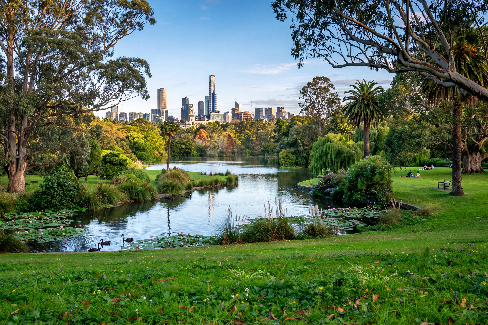

 | |
| Location | South Yarra, Melbourne, Victoria |
|---|---|
| Area | 38 ha |
| Established | 1846 |
The Royal Botanic Gardens, Melbourne are botanic gardens on the south bank of the Yarra River in Melbourne, Australia, founded in 1846. Together with the Cranbourne gardens they form Royal Botanic Gardens Victoria.
First director Ferdinand von Mueller (from 1857) established the National Herbarium of Victoria and planted extensively; William Guilfoyle, director from 1873, reshaped the gardens into the picturesque landscape of sweeping lawns, ornamental lake and volcanic outcrop seen today.
Over 8,500 plant species including Australian rainforest, camellias, roses, Californian and Southern China collections, the Ian Potter Foundation Children's Garden, and the Shrine of Remembrance nearby. The gardens host research, conservation and popular Moonlight Cinema and walks.